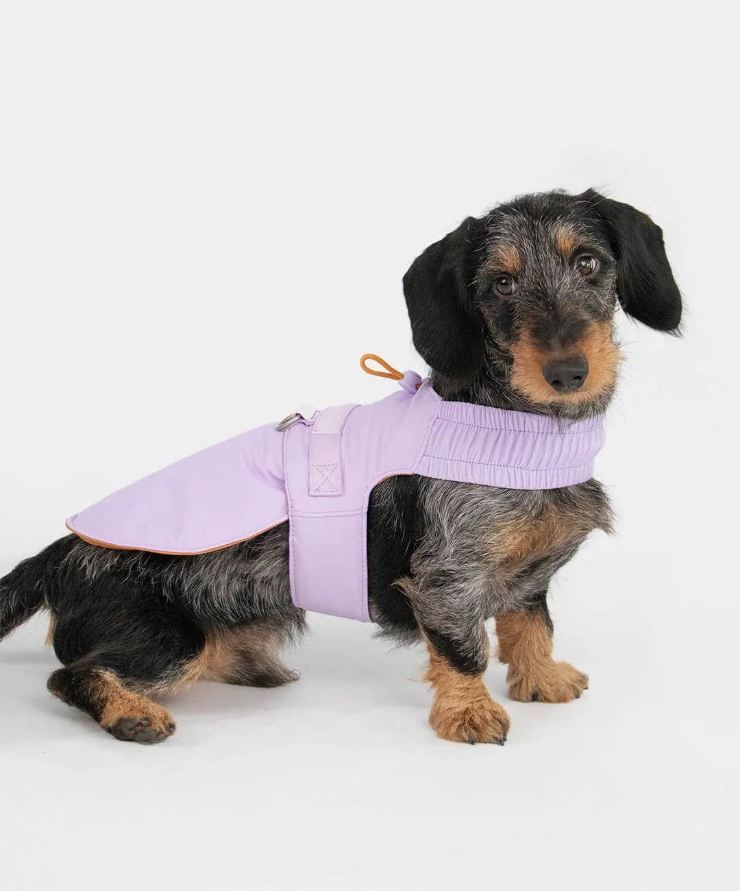
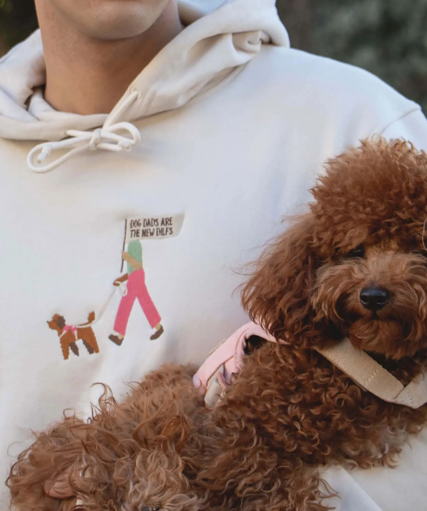
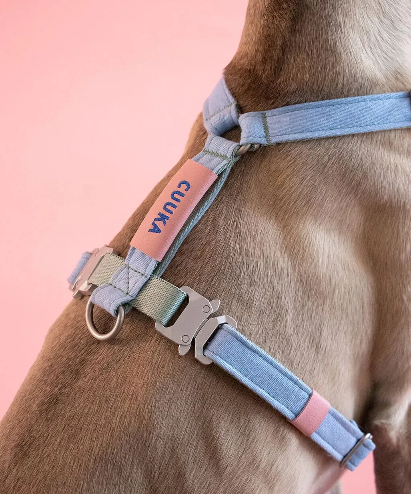
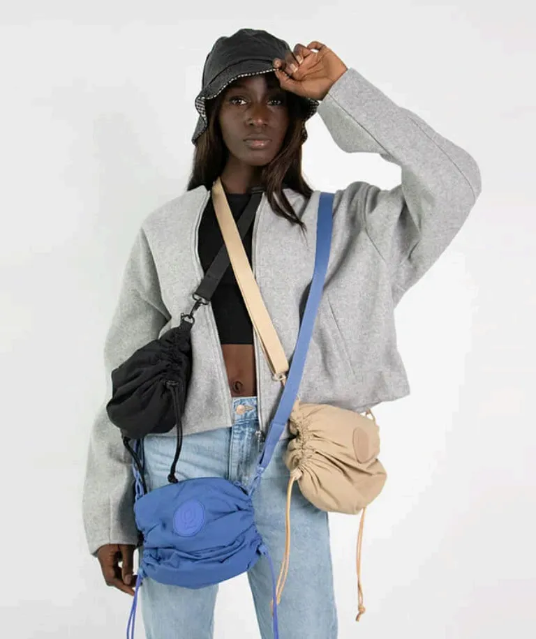
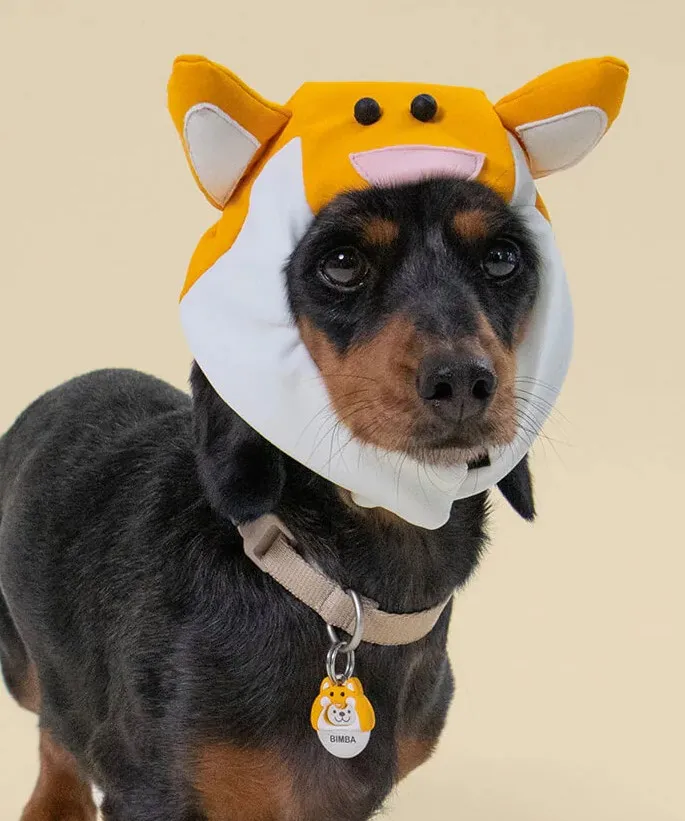
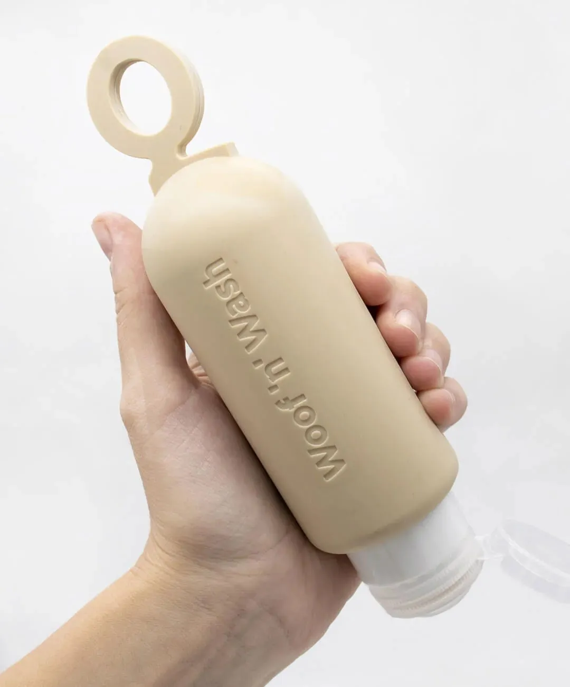

#DogWear
VEST HARNESS
Un arnés convertible en chaqueta, innovador por su diseño y pensado ergonómicamente para los perros más pequeños.
4

#DogWear
Un arnés convertible en chaqueta, innovador por su diseño y pensado ergonómicamente para los perros más pequeños.

#Fashion #Illustration
Ilustraciones para los diseños de las nuevas sudaderas personalizables "Dog Moms Are The New MILFS", y "Dog Dads Are The New DILFS".

#DogWear
Un arnés ligero, parte de la colección "Summer Collection" pensado para el verano.
Le acompaña un collar, una correa y un porta-bolsas a juego, una cama portátil de viaje, toalla y helados de peluche.

#Fashion #Accessories
Bolso con tres posiciones, pensado para solucionar las necesidades del paseo con tu perro.
Convertible en riñonera y mochila, incluye una serie de complementos, como un bol portátil y un porta-premios a juego.

#Accessories
Chapas identificativas para perros. La chapa simula perros disfrazados con gorritos, y por eso, en el rodaje, disfrazamos a los perros a conjunto de la chapa.
La funda de silicona no solo protege la chapa de golpes y ralladuras, sino que además las hace coleccionables e intercambiables.

#Accessories
Un imprescindible para los paseos, que complementa muchas de las colecciones de la marca.
Una botella portátil para llevar agua y limpiar los pipis en la calle.